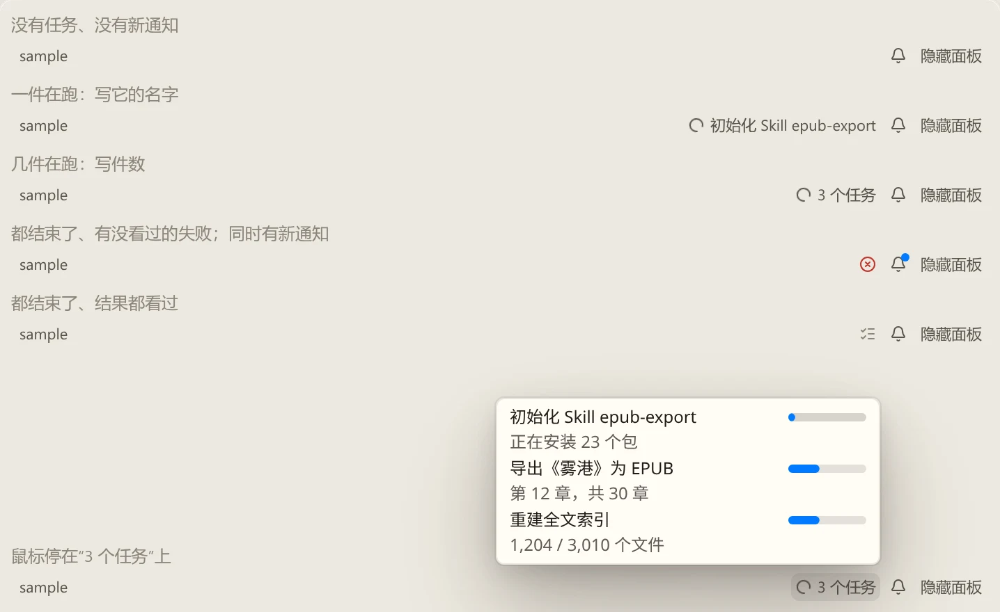
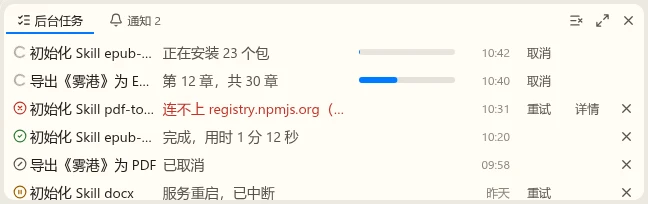

t34 后台任务
第 2 轮：按你第 1 轮的备注改了状态栏的样式，只有一道题；空状态的文字已经居中（不用答）。第 1 轮的决定见页底。
待定状态栏：任务条目与铃铛的样式
几种状态（放大两倍）；最后一张是鼠标停在“3 个任务”上
和第 1 轮比，改了这几处：
- 任务条目、铃铛和“隐藏面板”用同一种按钮：一样高、一样的悬停底色，条目之间都是 4px。
- 图标统一为 12px 的同一套线条图标。原来的转圈用的是另一个组件，颜色浅、线条细，和别的图标不搭，换成同一套里的转圈图标，颜色跟文字一样；系统设了减少动画时不转。
- 铃铛本身不变色，有新通知时只在右上角加一个蓝点，蓝点外面一圈状态栏的底色，和铃铛分开。第 1 轮是整个铃铛变蓝。
- 悬停提示用产品里真的提示组件：每件两行，名字和进度条一行，状态一行，名字太长时截断；提示和条目右对齐，不会伸出窗口。第 1 轮是手画的卡片，三列挤在一行。
- 都结束后只留一个图标：有没看过的失败时是红色的失败图标，否则是淡色的任务图标。
已定第 1 轮的答复（第 5–7 条）
- “后台任务”视图：一行一件，整个列表共用几列；窄的时候名字和状态截断，悬停看全文；空的时候文字居中。
- “通知”视图：照第 1 轮的稿。
- 状态栏：铃铛一直在；样式要优化，本轮改了，见上。
后台任务（默认布局的宽度）
已定会话里定的（第 1–4 条）
- 任务在服务端登记：刷新页面、开几个窗口，看到的都是同一份；服务重启后清空，正在跑的记为“已中断”。
- 范围：NeuroBook 级的任务，也就是插件发起的长任务（Skill 安装这类）。Agent 的后台命令和后台子代理归 t22。
- 通知中心和任务列表都做，两者都作为视图放在底部面板里。
- 注意力排序：先看到状态栏上的条目，点开是任务视图；安装输出这类原文收在“详情”里；任务开始时不弹通知，结束时弹，成功的过一会儿自动消失，失败的一直留着；关掉通知不影响任务列表。
书架页（没有打开作品时）没有状态栏和底部面板，在那里只会弹出通知；打开作品后，任务和通知都能在面板里看到。